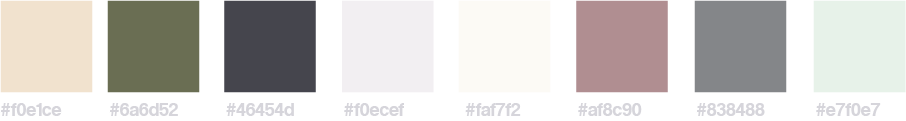
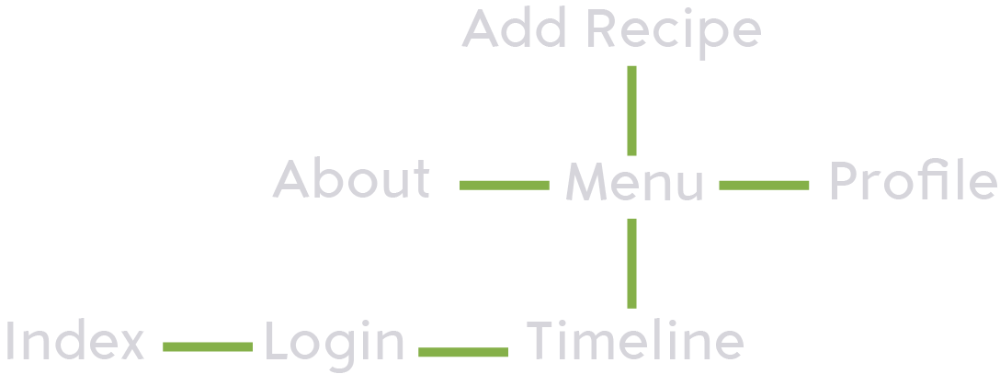
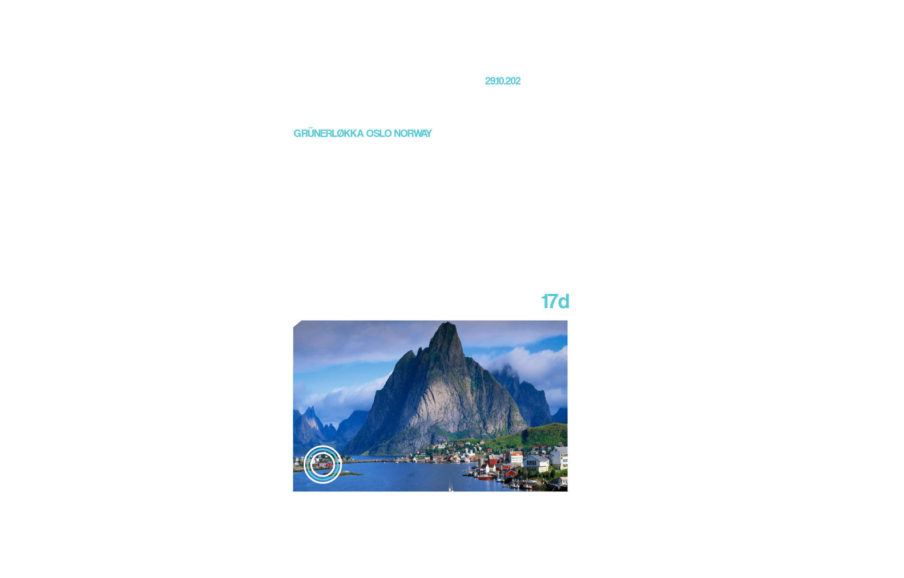
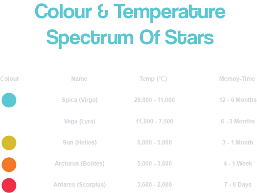
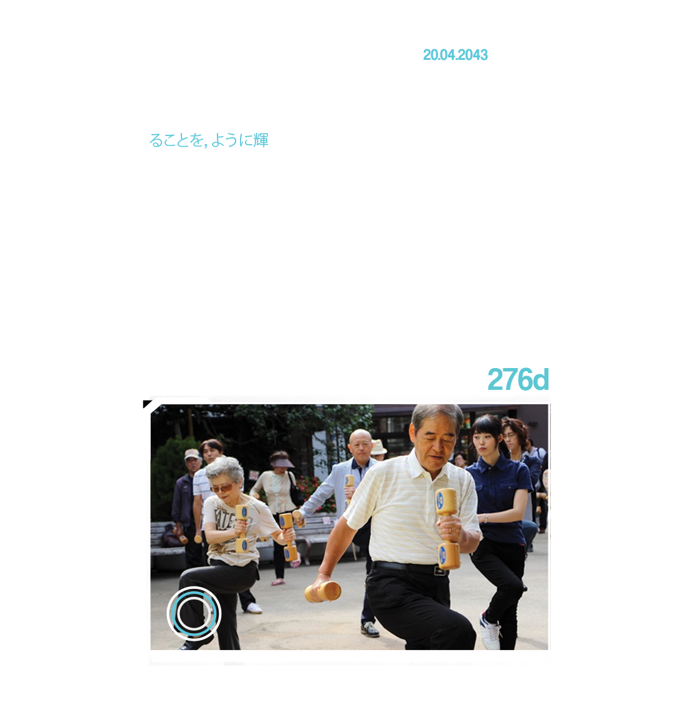
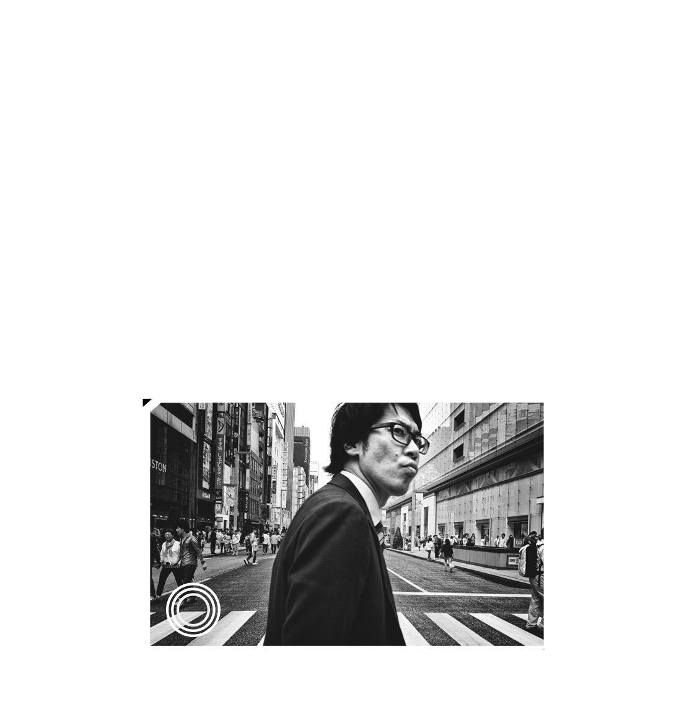
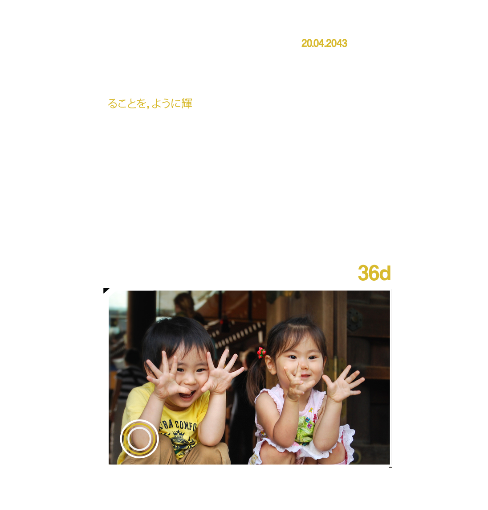

-
Bella Napoli
Forage
System For Living brief encouraged us to look at the fragility of our planet and how we can combat this through design and creative mediums. I looked at how these problems began to hopefully lead me to finding a solution.
38% of all food is wasted, 6 Billion pounds (lb) Of perfectly edible produce is wasted Every year, and 26% of all vegetables grown are destroyed before they even reach the shops. This worrying information gave me a topic to focus on and I created this webpage to show ten steps to prevent food waste: Click Here!

This then lead me to create a digital cooking book titled; Forage - We all have food in our cupboards and fridge which a perishable, we try and use them but sometimes they go to waste. Instead of letting these go to waste, Forage encourages people to use the left overs you may well have thrown away. For example, I might get home and all I have in the fridge is some broccoli, cream and some fish which all are on the brink of going off. I might have no idea how to combine these together to make a delicious meal, however the Forage data base will have a recipe which contains these ingredients.
Interface

Index & Menu


Timeline


About, Tips & Recipe Upload


Profile, Personal Recipes & Cookbook


Site Map

Demonstration of App
Please watch this video to see the working app.
Rating System

I had a few other ideas for the rating system like star ratings, but I felt I would take inspiration from Call of Duty and give users badges to encourage regular activity and competitively. Each rank is named in conjunction to the ranking of staff in a kitchen.
Marketing
People who would use Forage inherently like food. To find an audience of people that like food where better to look then restaurants? With the app I will be offering an exclusive deal for Restaurateurs: Instant submission of up to 10 recipes, geographic advertising on the app for their brand for 6 months, if they get a rating over 70% for their recipes they will receive unlimited upload and on the app they will have a certified restaurant mark on their recipes and profiles. They can also place their company logo on their recipe pages. In exchange we will send them a sticker they can place in their window, a discounted price for a new menu design where I will include some information about Forage and the logo. This service not including the menu design will cost £1490 a year however this price will go down to £790 if they place the Forage logo in their window. We offer professional photography of food for an additional £1000.
10% of Forage’s profits will be donated to the charity; This Is Rubbish. This is Rubbish aims to communicate the preventable scale of food wasted in the UK, through policy research, community and arts led public events. Formed in 2009 by volunteers, TiR registered as a Community Interest Company in 2011. The organization now has an extensive portfolio of successful events through England and Wales.
Find Your Inner Chef.
To see the development of the app and design process please Click Here!
-
Bella Napoli
Agile Aging
Agile Aging was a brief set by the RSA sponsored by Waitrose with a cash prize of £2500. The brief looked at the role of design in addressing some of the complex challenges presented by an aging population. In particular it asks you to address how older people can increase their mental agility, and combat the effects of diseases like Alzheimer's. Currently there are 60,000,000 people worldwide suffering with Dementia. This number is expected to triple in the next 10 years.

Juno, titled after the Roman Goddess of Memory is a social media site which gives value to memories. Juno lets users upload "posts" in this app they are known as "memories". Every memory has a time period before it fades away, however with endorsements (likes) from the users regularly a memory is more time. Juno is like a Tamagotchi for memories.

The time left on each memory is signified by a colour coding system in correlation to the star temperature spectrum shown bellow. By tapping the endorsement button, time is added to a memory, each tap is a day (There is a daily limit). This encourages the user to revisit their memory bank and to regularly endorse their memories. When a memory is running out of time, the image fades away, eventually to the point where the name fades away: This is called a dying star and the only way to revive one of these is to enter the title of the memory.

    
Once the memory has completely faded the only way you can save it is by entering the Orb Realm at the location the memory was originally uploaded. The Orb Realm is an augmented reality view of where your memories are saved, this shows where your memories are geographically. Using Google Map's API system each user has a map of all of their memories. In the Orb Realm & Memory Map all users living & dead memories are visible. Any user can view other users memories as an potion on Memory Maps and in the Orb Realm.
Juno - A Piece Of Mind
Bellow is a visual display of the working app.
To see the development of the app, the marketing plans and design process please Click Here!